Beauty Leaders ·
How to distinguish surgical expertise from social-media fame
Professor Alireza Mohebbi
Professor at Iran University of Medical Sciences; ENT and head-and-neck surgeon with rhinology fellowship training, as introduced in the episode
THE CONVERSATION ARCHIVE
29 published conversations featuring physicians and specialists across Beauty Leaders and Beauty Ambassadors. Each introduction presents the guest and the editorial significance of the episode, with full videos on YouTube.
Beauty Leaders ·
Professor Alireza Mohebbi
Professor at Iran University of Medical Sciences; ENT and head-and-neck surgeon with rhinology fellowship training, as introduced in the episode

Beauty Leaders ·
Dr. Seied Omid Keyhan
Oral and maxillofacial surgeon and co-founder of iFACE Academy, as introduced in the episode
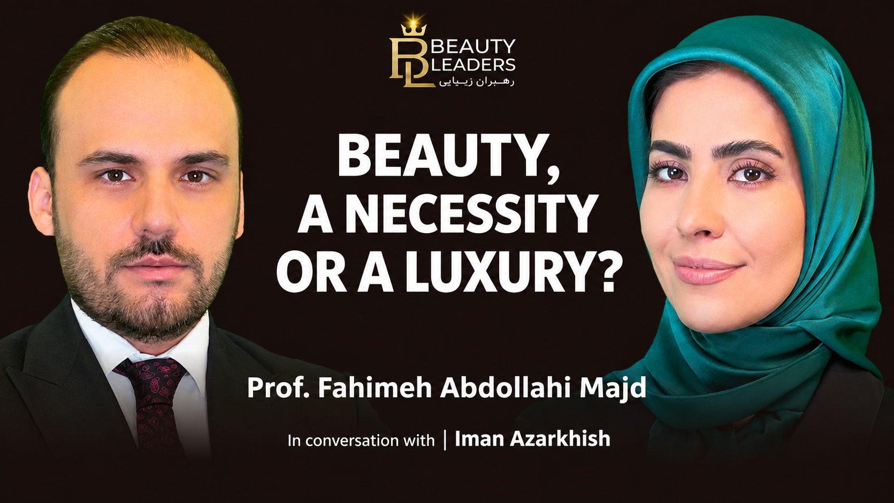
Beauty Leaders ·
Professor Fahimeh Abdollahimajd
Full Professor of Dermatology, Shahid Beheshti University of Medical Sciences; Dermatology Department Chair, Shohada-e Tajrish Hospital

Beauty Leaders ·
Professor Farzin Sarkarat
Full Professor of Oral and Maxillofacial Surgery; Adjunct Professor, Gulf Medical University, UAE
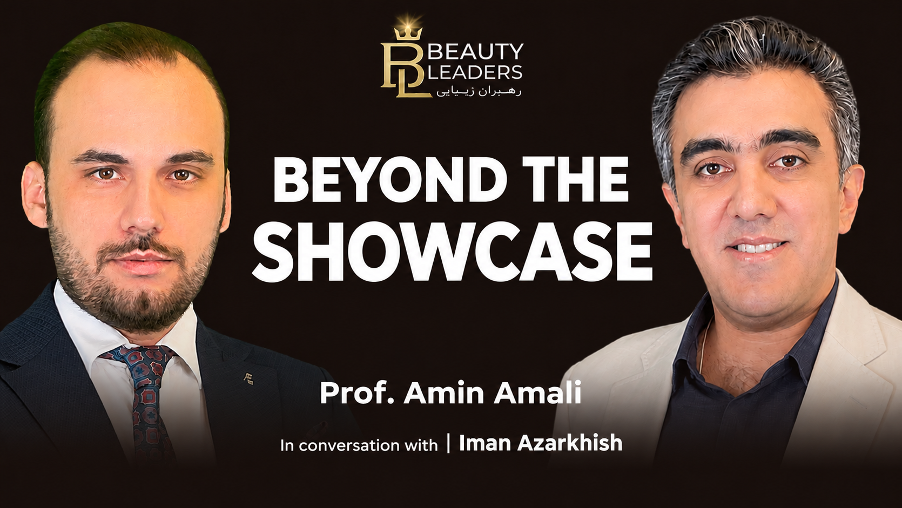
Beauty Leaders ·
Professor Amin Amali
ENT and head-and-neck surgeon; professor at Tehran University of Medical Sciences, as introduced in the episode
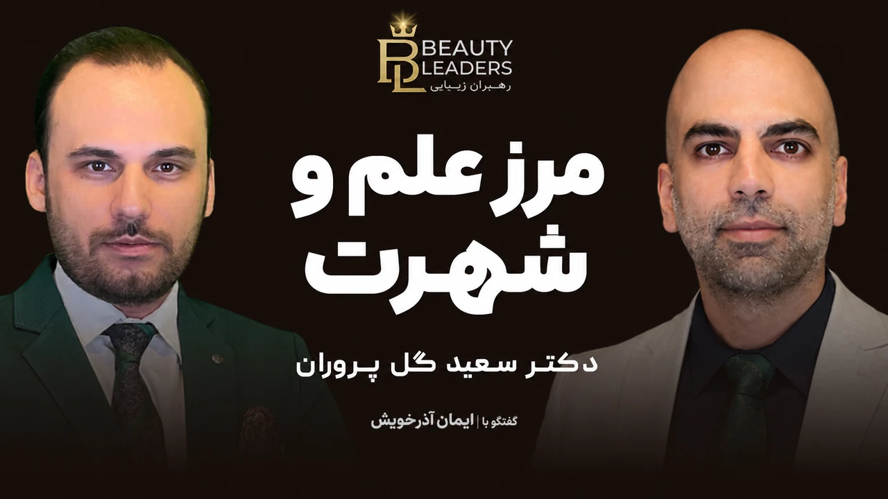
Beauty Leaders ·
Dr. Saeid Golparvaran
ENT and head-and-neck surgeon; assistant professor at Tehran University of Medical Sciences, as introduced in the episode
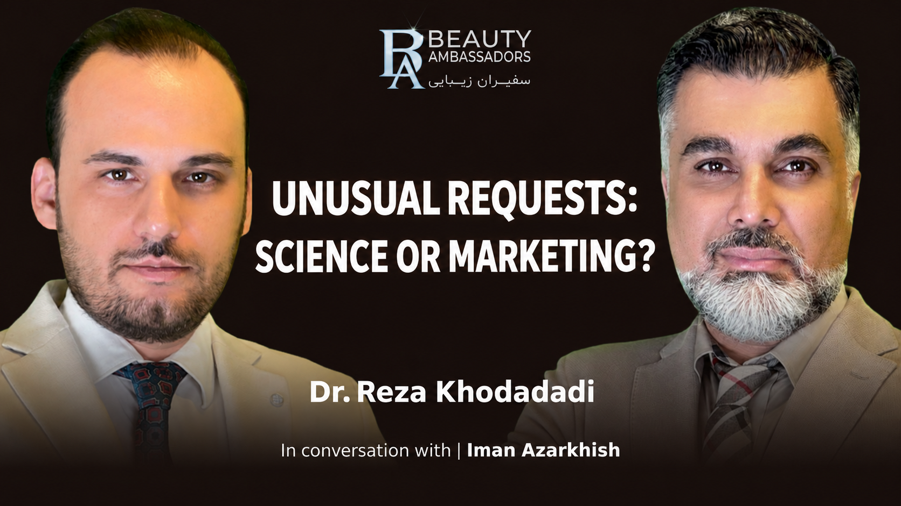
Beauty Ambassadors ·
Dr. Reza Khodadadi
Aesthetic physician and international aesthetics trainer, as introduced in the episode

Beauty Ambassadors ·
Dr. Tanaz Fakhim
Dermatologist, as introduced in the episode

Beauty Leaders ·
Dr. Behnam Bohlouli
Oral and maxillofacial surgeon with academic experience at the University of Toronto
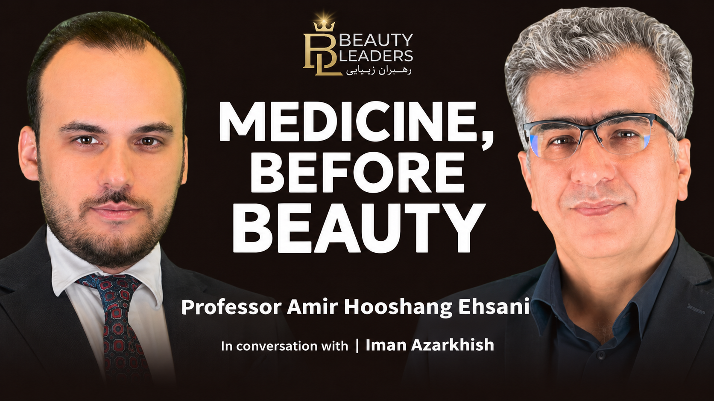
Beauty Leaders ·
Professor Amirhoshang Ehsani
Dermatologist and professor at Tehran University of Medical Sciences, as introduced in the episode

Beauty Leaders ·
Dr. Mohammad Golshani
Dermatologist with academic and professional-society experience, as introduced in the episode

Beauty Leaders ·
Professor Farhad Hafezi
Plastic and reconstructive surgeon and academic, as introduced in the episode
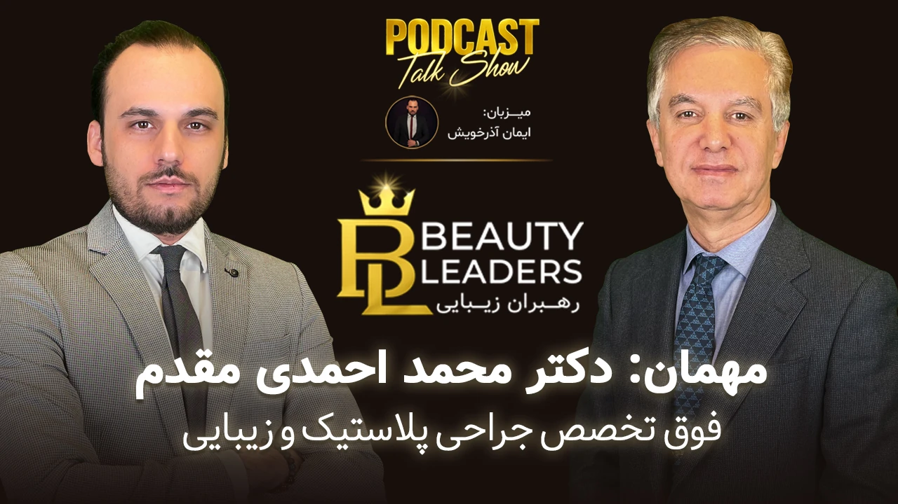
Beauty Leaders ·
Dr. Mohammad Ahmadi Moghaddam
Plastic and reconstructive surgeon, as introduced in the episode

Beauty Ambassadors ·
Dr. Jamaleddin Zargaran
Aesthetic physician and international aesthetics educator, as introduced in the episode

Beauty Leaders ·
Dr. Kamal Seyed Forootan
Plastic and reconstructive surgeon, as introduced in the episode

Beauty Leaders ·
Dr. Reza Vaghardoost
Plastic and reconstructive surgeon, as introduced in the episode
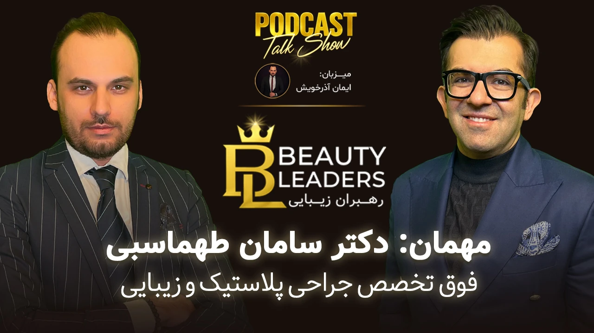
Beauty Leaders ·
Dr. Saman Tahmasebi
Plastic and reconstructive surgeon, as introduced in the episode
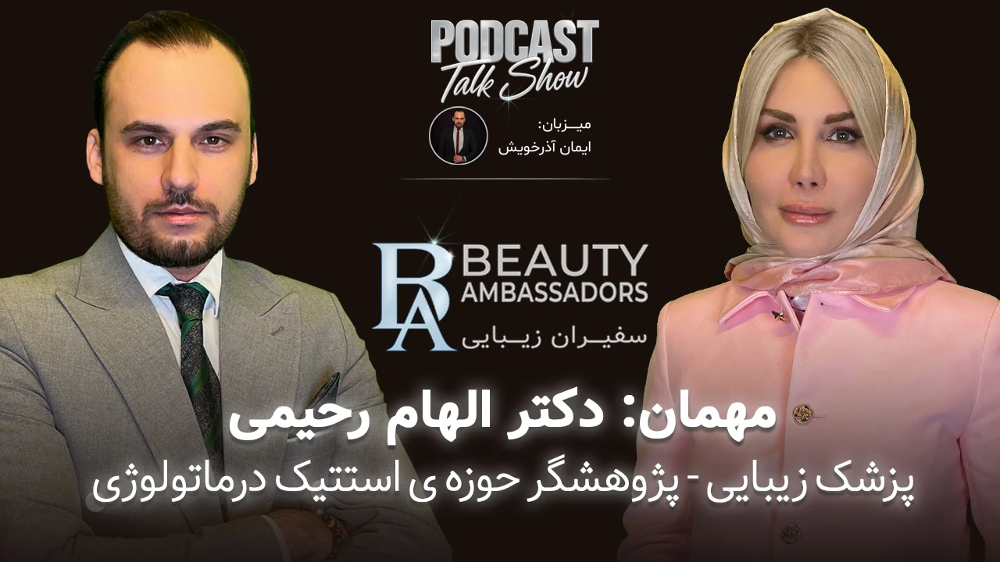
Beauty Ambassadors ·
Dr. Elham Rahimi
Aesthetic physician and researcher in aesthetic dermatology, as introduced in the episode

Beauty Leaders ·
Dr. Ali Mousavi
Plastic and reconstructive surgeon, as introduced in the episode

Beauty Leaders ·
Dr. Kamran Jazayeri
Dermatologist and hair-transplant surgeon, as introduced in the episode

Beauty Leaders ·
Dr. Sam Toyserkani
ENT specialist and member of the American Academy of Facial Plastic and Reconstructive Surgery, as introduced in the episode

Beauty Leaders ·
Dr. Zahra Estilaf
Aesthetic physician and medical technology educator, as introduced in the episode
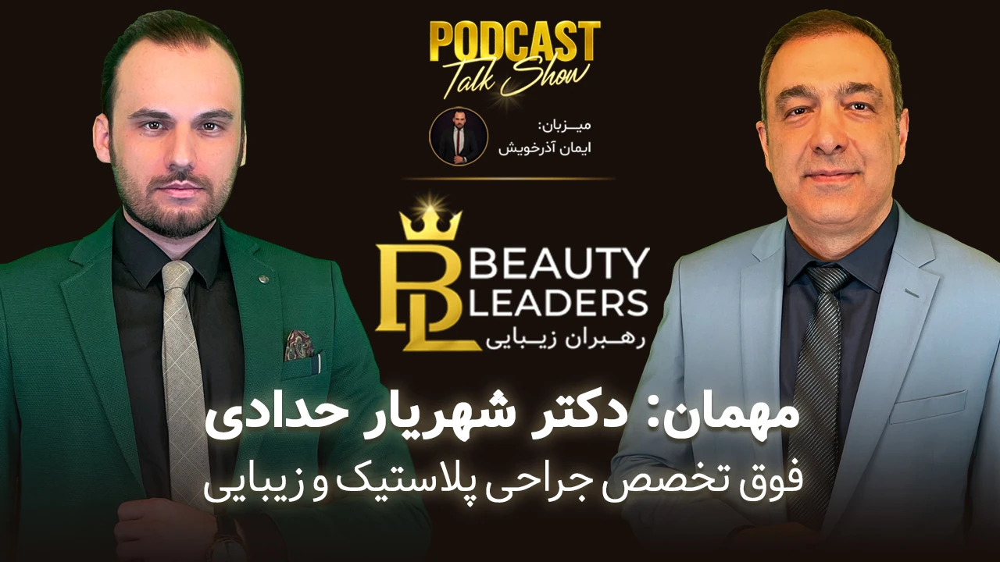
Beauty Leaders ·
Dr. Shahriar Hadadi
Plastic and reconstructive surgeon; Tehran University of Medical Sciences faculty and Razi Hospital department head, as introduced in the episode

Beauty Ambassadors ·
Dr. Yasaman Kabir
Obstetrician-gynaecologist with a focus on women’s health and hormone therapy, as introduced in the episode

Beauty Ambassadors ·
Dr. Maryam Halakou
Aesthetic physician and founder of wellness and beauty centres, as introduced in the episode
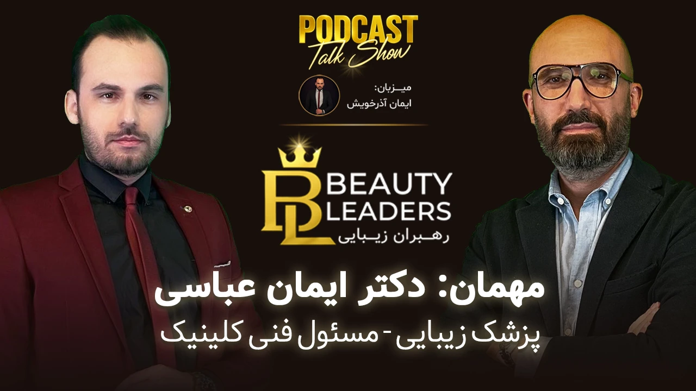
Beauty Leaders ·
Dr. Iman Abbasi
Dermatology and aesthetic care, as introduced in the episode

Beauty Leaders ·
Dr. Azar Mohammadi
Aesthetic physician and international body-contouring educator, as introduced in the episode
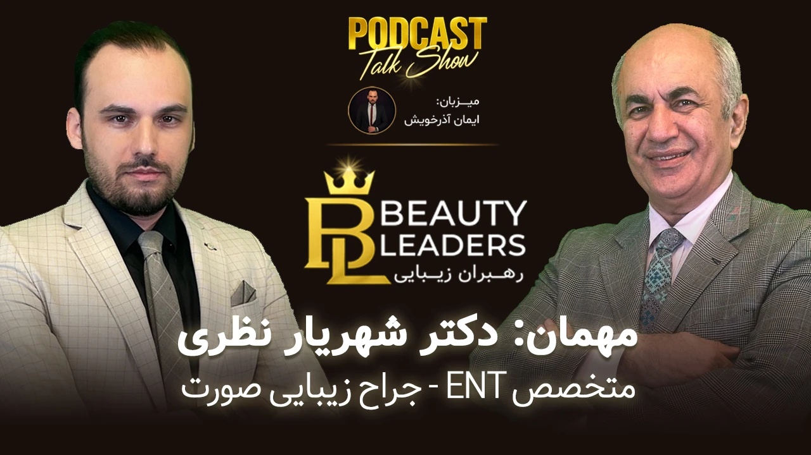
Beauty Leaders ·
Dr. Shahriar Nazari
ENT specialist and facial aesthetic surgeon; ENT department head at Bank Melli Hospital, as introduced in the episode
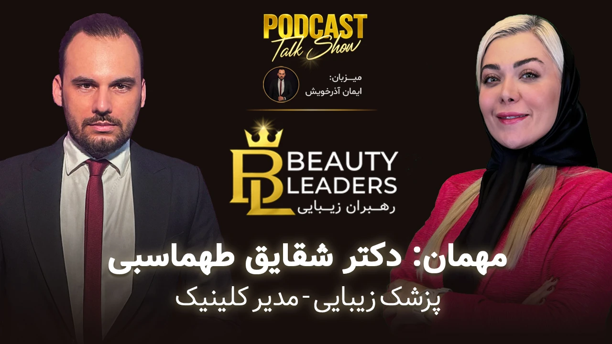
Beauty Leaders ·
Dr. Shaghayegh Tahmasebi
Aesthetic physician and clinic director
No conversations found.
This archive draws on 29 public entries in the channel owner’s official video export. Cover artworks are provisional and may be updated independently for Persian and English. Professional descriptions are based on the published programme introductions; independently corroborated sources are linked only where specifically available.